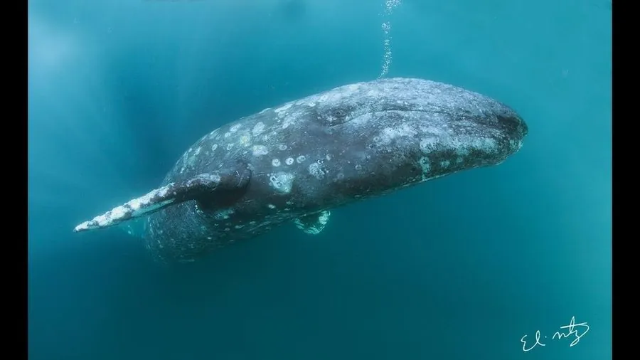

哺乳动物 · 动物界
灰鲸 Eschrichtius robustus

太平洋沿岸迁徙的须鲸，皮肤上布满藤壶和鲸虱形成的斑块，每年往返迁徙约两万公里，是迁徙距离最长的哺乳动物之一。
- 分类
- 门脊索动物门纲哺乳纲目偶蹄目科灰鲸科属灰鲸属
- 栖息环境
- 北太平洋沿岸浅海与潟湖，繁殖期进入温暖潟湖
- 地理分布
- 北太平洋，东太平洋种群从墨西哥到白令海，西太平洋种群沿亚洲东岸
- 保护级别
- IUCN 无危（LC，东太平洋种群）；西太平洋种群极危（CR）
物种志
灰鲸体长 12–15 米，体重 15–40 吨，雌性略大于雄性。它的身体粗壮呈纺锤形，皮肤为灰色并布满白色斑驳和藤壶、鲸虱留下的痕迹，没有背鳍，背部只有一列小突起；头部较短，鲸须短而粗糙。
灰鲸分布于北太平洋，分为东、西两个种群：东太平洋种群在墨西哥下加利福尼亚的潟湖繁殖，夏季到白令海和北极海域觅食；西太平洋种群则沿亚洲东岸迁徙，数量极少。它是迁徙距离最长的哺乳动物之一，每年往返可达约 2 万公里，沿海岸线迁徙，常贴近岸边游动。灰鲸主要在海底侧卧吸食底栖甲壳类，会用嘴翻起泥沙过滤食物；雌鲸妊娠期约 13–14 个月，每胎 1 仔。东太平洋种群在保护后恢复良好，西太平洋种群仍极度濒危。
形态与习性
- 食性底栖甲壳类为主，侧卧吸食海底泥沙中的食物
- 体长12–15 m
- 体重15–40 t，雌性略大于雄性
- 寿命约 50–70 年
- 繁殖妊娠期约 13–14 个月，每胎 1 仔
- 迁徙每年往返约 2 万公里
- 皮肤布满藤壶与鲸虱留下的白色斑块
趣味知识
- 灰鲸每年沿海岸迁徙约 2 万公里，是最长的哺乳动物迁徙之一。
- 它的皮肤上常附着藤壶和鲸虱，形成斑驳的白色痕迹。
- 灰鲸没有背鳍，只在背部有一列小突起。
- 觅食时灰鲸会侧卧海底，吸食泥沙中的甲壳类。